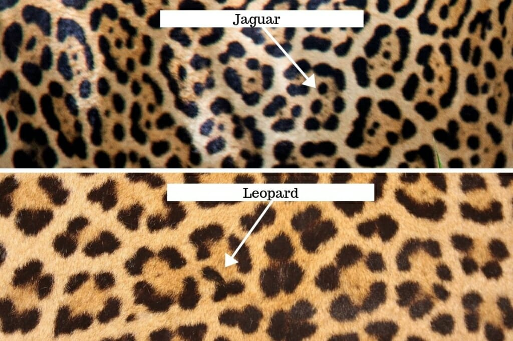
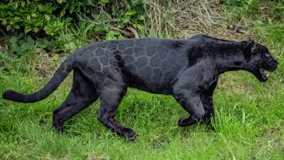

Fun facts about Jaguars
1. How to define the difference between leopards and jaguars
There is a difference between the two, Jaguars have a big head with powerful jaws for biting into the head of prey. They are the only big cat known to kill their prey like this. Leopards have a thinner face. This is an easy why to tell them apart.

They also have different types of spots
2. Black panthers are actually black jaguars
Black panthers from south america are actually black jaguars. This is due to the genertic condition they have called melanism. About 10% of Jaguars in the wilf are black and provide them with camouflage when hunting at night.
If you look closely you can see the markings faintly on their fur
3. 3rd largest big cat
As said they are the 3rd biggest cat species in the world and the largest in the americas, with a body length of up to 1.85m. They are also one of 4 big cats that can actually roar.
4. They are near threatened!
Jaguars used to live in the Grand canyon. But due to government hunting they have now been completely elimated from the U.S. They are now endangered throughout their habitat of centeral and south america due to habitat destruction, trophy hunting and conflict with humans.
Please support the Jaguars via donating to charitys that help protect them like WWF